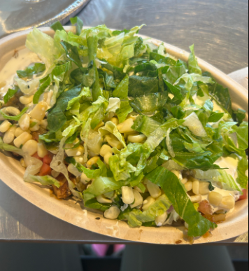

I love chipotle. I wish I was a chipotle. Chipotle is my life. My typical order is a bowl with half white half brown rice, chicken, fajitas, mild, extra medium, hot on the side, sour cream, corn, cheese, sometimes guacamole, and vinagrette on the side. If I'm feeling like a baller that day I'll even throw in some chips on the side to eat with my bowl.One of my favorite foods is Chipotle because I love the toppings and how everything is freshly made. I eat Chipotle about three times a month, I highly reccomend!
This video is
I think my favorite show at the moment is Attack on Titan. I'm rewatching the series and its honestly the best show ever made I highly reccomend.